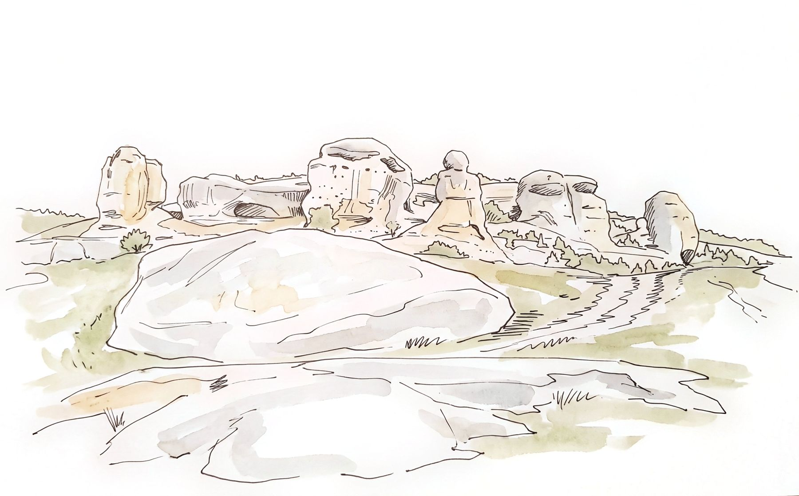
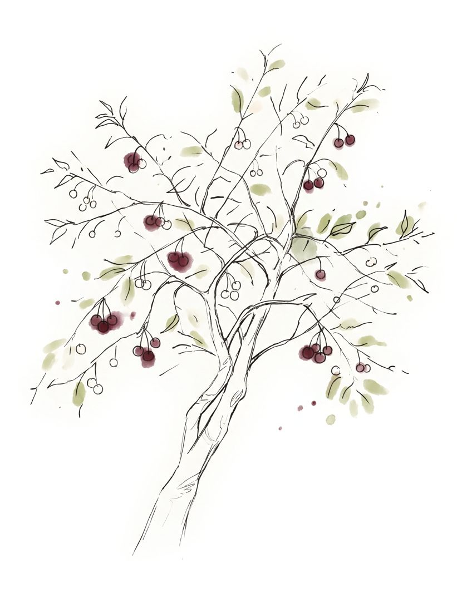

Knowledge, Heritage, and Political Violence
My research interests lie at the intersection of social anthropology, political violence, and the anthropology of knowledge and cultural heritage. Drawing on long-term ethnographic research in Crimea, I explore how occupation, displacement, and political repression reshape knowledge practices, ethnographic relationships, and the preservation and transmission of cultural heritage.
I am particularly interested in the politics of knowing and not knowing, Indigenous perspectives, and the methodological and ethical challenges of conducting ethnography under conditions of political violence.

Themes

A Crimean Tatar woman cut cherry branches for us because she could not pick all the berries in time. She was in a hurry. We did not yet know that we had to hurry too.Viktorivka, Crimea · first expedition, 2003
Projects
- OngoingThe Unfinished Field: Ethnographic Knowledge under Political ViolenceHow ethnographic knowledge is produced, withheld, and rewritten when the field is occupied and can no longer be revisited. Drawing on two decades of fieldwork in Crimea, the research examines silence and withholding as ethnographic practices, asynchronous and remote ethnography, and writing after the loss of the field.
- 2025–26Writing from the Edge(s)Academic writing workshop for Ukrainian scholars, GCE-HSG Black Sea Initiative, University of St. Gallen. Resulted in a special section in Anthropology and Humanism.
- 2024In the Thunderstorm of War: Anthropology of CatastropheWartime testimonies from Ukraine. Project lead, Lysiak-Rudnytsky Ukrainian Studies Programme, Ukrainian Institute.
- 2020–22FUME: Future Migration Scenarios for EuropeField research organizer in Ukraine, Horizon 2020, coordinated by Aalborg University.
- 2019–22Conflict situations in Ukrainian societyPrincipal Investigator, state-funded fundamental research project on worldview and social aspects of conflict, Research Institute of Ukrainian Studies.
- 2003–2014Ethnography of Crimean Tatar communitiesLong-term fieldwork across Crimea on wedding ritual, aziz shrines and sacred landscape, family religiosity and dua, and foodways. More than 300 interviews with elders and documentation of some 50 local sacred sites. Basis of the books on the Crimean Tatar wedding (2015) and Crimean Tatar cuisine (2019).